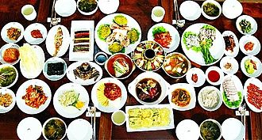
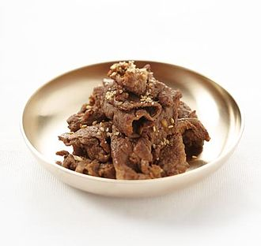
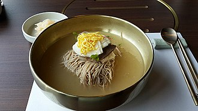
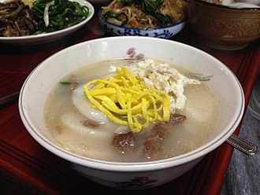
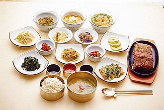

Korean cuisine has evolved through centuries of social and political change. Originating from ancient agricultural and nomadic traditions in Korea and southern Manchuria, Korean cuisine reflects a complex interaction of the natural environment and different cultural trends.[1][2] Korean cuisine is largely based on rice, vegetables, seafood and (at least in South Korea) meats. Dairy is largely absent from the traditional Korean diet.[3] Traditional Korean meals are named for the number of side dishes (반찬; 飯饌; banchan) that accompany steam-cooked short-grain rice. Kimchi is served at nearly every meal. Commonly used ingredients include sesame oil, doenjang (fermented bean paste), soy sauce, salt, garlic, ginger, gochugaru (pepper flakes), gochujang (fermented red chili paste) and napa cabbage. Ingredients and dishes vary by province. Many regional[citation needed] dishes have become national, and dishes that were once regional have proliferated in different variations across the country. Korean royal court cuisine once brought all of the unique regional specialties together for the royal family. Foods are regulated by Korean cultural etiquette. History Main article: History of Korea Prehistoric In the Jeulmun pottery period (approximately 8000 to 1500 BCE), hunter-gatherer societies engaged in fishing and hunting, and incipient agriculture in the later stages.[1] Since the beginning of the Mumun pottery period (1500 BCE), agricultural traditions began to develop with new migrant groups from the Liao River basin of Manchuria. During the Mumun period, people grew millet, barley, wheat, legumes and rice, and continued to hunt and fish. Archaeological remains point to development of fermented beans during this period, and cultural contact with nomadic cultures to the north facilitated domestication of animals. Three Kingdoms period In a mural of Gakjeochong (각저총 "Tombs of Wrestlers"),[4] a Goguryeo tomb built around the 5th century shows a Goguryeo nobleman having a meal with two ladies.[5] The Three Kingdoms period (57 BCE – 668 CE) was one of rapid cultural evolution. The kingdom of Goguryeo (37 BCE – 668 CE) was located in the northern part of the peninsula along much of modern-day Manchuria. The second kingdom, Baekje (18 BCE – 660 CE), was in the southwestern portion of the peninsula, and the third, Silla (57 BCE – 935 CE), was located at the southeastern portion of the peninsula. Each region had its own distinct set of cultural practices and foods. For example, Baekje was known for cold foods and fermented foods like kimchi. The spread of Buddhism and Confucianism through cultural exchanges with China during the fourth century CE began to change the distinct cultures of Korea.[6] Goryeo period Silver spoon and chopsticks entombed with King Injong in 1146 During the latter Goryeo period, the Mongols invaded Goryeo in the 13th century. Some traditional foods found today in Korea have their origins during this period. The dumpling dish, mandu, grilled meat dishes, noodle dishes, and the use of seasonings such as black pepper, all have their roots in this period.[7] Joseon period Agricultural innovations were significant and widespread during this period, such as the invention of the rain gauge during the 15th century. During 1429, the government began publishing books on agriculture and farming techniques, which included Nongsa jikseol (literally "Straight Talk on Farming"), an agricultural book compiled under King Sejong.[8][9][10] A series of invasions in the earlier half of the Joseon caused a dynamic shift in the culture during the second half of the period. Groups of silhak ("practical learning") scholars began to emphasize the importance of looking outside the country for innovation and technology to help improve the agricultural systems. Crops traded by Europeans from the New World began to appear, acquired through trade with China, Japan, Europe, and the Philippines; these crops included maize, sweet potatoes, chili peppers, tomatoes, peanuts, and squash. Potatoes and sweet potatoes were particularly favored as they grew in soils and on terrains that were previously unused.[11] Government further developed agriculture through technology and lower taxation. Complex irrigation systems built by government allowed peasant farmers to produce larger crop volumes and produce crops not only for sustenance but also as cash crops. Reduced taxation of the peasantry also furthered the expanded commerce through increasing periodic markets, usually held every five days. One thousand such markets existed in the 19th century, and were communal centers for economic trade and entertainment. The end of the Joseon period was marked by consistent encouragement to trade with the Western world, China and Japan. In the 1860s, trade agreements pushed by the Japanese government led the Joseon Dynasty to open its trade ports with the west, and to numerous treaties with the United States, Britain, France, and other Western countries.[13] The opening of Korea to the Western world brought further exchange of culture and food. Western missionaries introduced new ingredients and dishes to Korea. Joseon elites were introduced to these new foods by way of foreigners who attended the royal court as advisers or physicians. This period also saw the introduction of various seasonings imported from Japan via western traders and alcoholic drinks from China.
 Korean style delicate and fine dining
 Korean Style marinated sliced meat
 Korean Style Cold Noodles with buckwheat
 Korean New Year Soup with rice cake
 This article is part of a series on